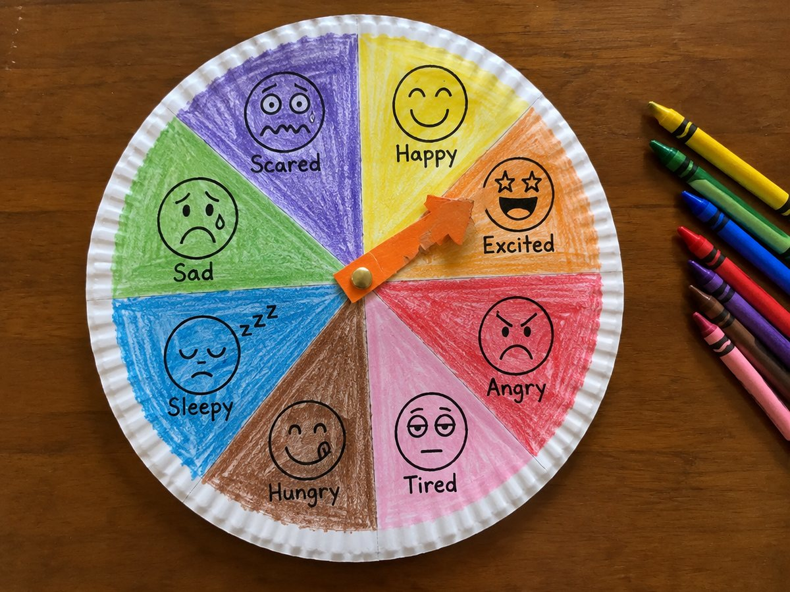

전체 단원 › 실험·활동 › 3~4학년 영어
종이접시 기분 시계

종이접시에 여덟 가지 기분 얼굴을 붙이고 화살표를 돌려, 오늘 내 기분을 영어로 묻고 답해요.
만들기 25분 · 놀이 10분 · 난이도 ★☆☆ 쉬움
준비물
- 종이접시 1장 — 시계판이 돼요. 없으면 도안 원판을 판지에 붙여요
- 기분 시계 도안 — 감정 얼굴 8칸 원판과 화살표 (A4 1장)
- 할핀 1개 — 화살표를 고정해요. 없으면 빨대 조각과 테이프로
- 풀, 가위, 색연필 —
하는 방법
- 얼굴 색칠하기
도안의 여덟 얼굴(happy, sad, angry, tired, hungry, sleepy, scared, excited)에 어울리는 색을 칠해요. - 원판 붙이기
원판을 오려 종이접시 가운데에 붙여요. - 화살표 달기
화살표를 상자 판지에 붙여 오리고, 가운데에 할핀을 꽂아 접시에 고정해요. - 묻고 답하기
부모님이 How are you? 하고 물으면 아이가 화살표를 돌려 I'm happy. 처럼 답해요. - 이유 말하기
한국어로 왜 그런 기분인지 말해도 좋아요. 영어로 I'm hungry. 다음에 '밥 먹고 싶어!'처럼요.
3~4학년 '감정 말하기'는 I'm + 기분 낱말 구조를 익히는 것이 목표입니다. 낱말만 말해도(Happy!) 괜찮지만, 부모님은 항상 I'm happy. 처럼 완전한 문장으로 되돌려 말해 주세요.
아이가 sad, angry를 고르면 영어 연습보다 '왜 그랬어?'라는 대화가 먼저입니다. 기분 시계는 감정을 말로 꺼내는 연습 도구이기도 합니다.
학교 교육과정 연결
- [4영02-07] 자신의 감정을 쉽고 간단한 문장으로 말하거나 보고 쓴다.